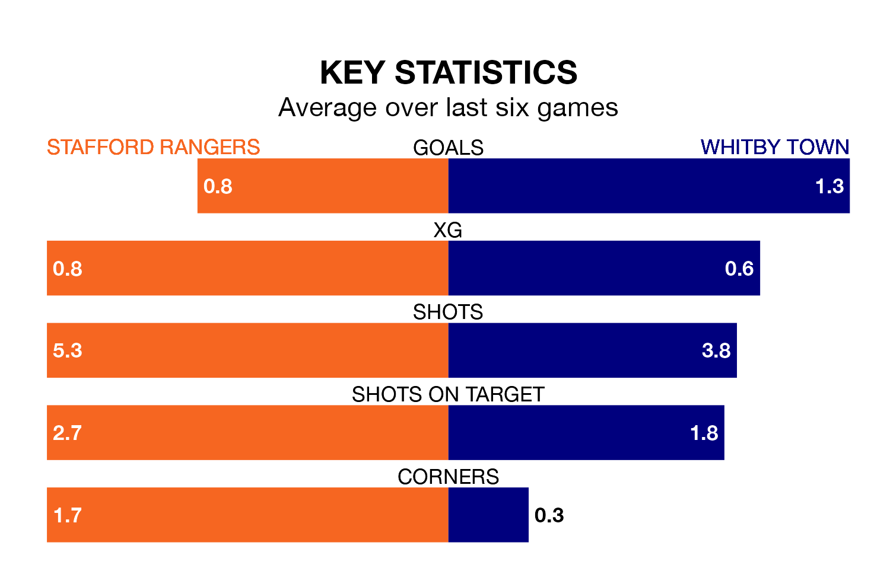

Stafford Rangers host Whitby Town on Saturday at Marston Road in the Northern Premier League.
In their last league match, on Monday, Stafford lost to Gainsborough Trinity 2-1 away.
Whitby also lost, 4-1 away at Ashton United on March 29.
In the last 10 years, Stafford and Whitby have played each other on 14 occasions. Stafford won five of them, Whitby three, and they drew six times.
On average, Stafford scored 1.3 goals and Whitby 1.1 in those matches.
Their last meeting was on December 19, when Whitby won 1-0 at home.
Stafford are 19th in the table after 36 games, of which they have won eight and drawn three, earning 27 points.
Whitby are 11 places ahead of Rangers in eighth, with 16 wins and eight draws putting them on 56 points.
With 35 goals in 36 games so far this season, the home team are the league's second-lowest scorers with 1.0 goals per game. And they are conceding more than average, letting in 72 goals at a rate of 2.0 per game.
Town, meanwhile, are average scorers, with 1.6 goals per game. They have conceded 1.2 goals per game.
Stafford are in disappointing form in the Northern Premier League, with two wins and four losses from their last six games.
With two wins and a draw over that period, the visitors' form is slightly better – they have taken seven points from 18, compared to Stafford's six.
Updated: 16:41 (UTC), 04/04/24